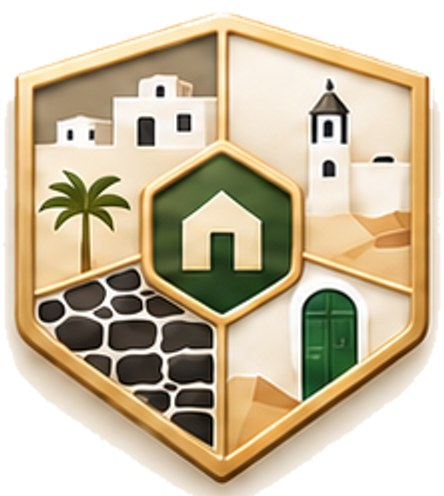
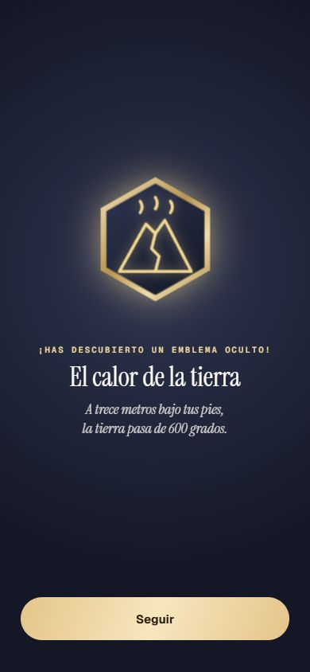

Repaso de la Tanda LZ3b
Retoques de Lanzarote: el Design nuevo (imprescindibles con un dibujo por sitio, Papagayo en elipse), «Abrir en Maps» por el nombre del sitio y el emblema tocado con su nombre y su línea. Sigue OCULTO (solo administrador); Roma no cambia. Marca cada punto en tu teléfono cuando lo hayas comprobado.
0 · Antes de empezar ✅ Hecho — Prompt guardado (docs/dias/PROMPT_TANDA_LZ3b.md, llegó entero hasta «reinicia el api-server»); va después de la tanda LL, ya subida; Lanzarote sigue oculto; Roma sin cambios (muestra de 60 idéntica)Un solo agente (yo). Dónde: No es de móvil. 1 · Design nuevo ✅ Hecho — `docs/diseno/proyecto/` al día con el zip «DESIGN LANZAROTE» (sin `uploads/` ni `Archivo/`)Cambian: la imagen de col1 (y su original), la pieza «Insignia Lanza Sitios» (nueva) y el emblema de Papagayo (de hexágono 120×106 a elipse 132×100). Lo demás, igual. La página «App HOY» no ha cambiado todavía: es de la tanda HOY1. Dónde: No es de móvil. ✅ Hecho — «Los imprescindibles de Lanzarote» (col1): cada gajo con su sitio por el dibujoDesde las 12 en sentido horario: volcán = Timanfaya, cangrejo = Jameos del Agua, entrada de cueva = Cueva de los Verdes, prismáticos = Mirador del Río, burbujas = Fundación César Manrique, laguna verde = El Golfo, uvas = La Geria. Tabla al día en `docs/dias/_lz3_tabla_gajos.json`. Dónde: Hoja de logros › Los imprescindibles de Lanzarote. ✅ Hecho — Las otras 6 colecciones, como están (campanario = Teguise, palmera = Haría, cactus = Jardín de Cactus)No he tocado sus gajos. Dónde: Hoja de logros › colecciones. ⚠️ A medias — Comprobar que cada imagen tiene tantos gajos como sitios y que se distinguen a simple vistaCuadran 1 (7/7), 2 (7/7), 3 (7/7), 4 (6/6) y 5 (7/7). NO cuadran: «Pueblos con alma» (col6) trae 4 trozos y tiene 5 sitios (es lo que veías: 4 trozos), y «Entre viñas de ceniza» (col7) trae 3 trozos y tiene 1 sitio. Para pedírselo a Design: la imagen de col6 con sus 4 trozos está en `docs/diseno/proyecto/assets/lanza/col6.png`. Mientras tanto, col6 se pinta con sus 4 trozos (campanario = Teguise, puerta verde = Arrecife, piedra negra = El Golfo, casas y palmera = Haría) y Caleta de Famara se queda sin trozo; la colección solo sale completa con los 5 sitios. Dónde: Hoja de logros › Pueblos con alma. 
✅ Hecho — Si Design ha cambiado también algún emblema o alguna colección másSolo el emblema de Papagayo (ahora una elipse), puesto igual que Design. Dónde: Hoja de logros › emblemas. 2 · Abrir en Maps ✅ Hecho — [Abrir en Maps] de «Dónde aparcar» busca el sitio por su nombre y su pueblo; solo a nuestra coordenada si el nombre es ambiguo o Maps no lo conoce25 sitios por nombre (p. ej. «Jameos del Agua, Haría»). Van por COORDENADA (9): La Geria y sus bodegas, Caletón Blanco, Ciudad Estratificada (Rofera de Teseguite), Playa de Montaña Bermeja, Las Grietas, Mirador del Bosquecillo, Mirador de Haría, Mirador de los Helechos y Playa Blanca / Faro de Pechiguera. El texto de «Dónde aparcar» se queda; las coordenadas siguen sirviendo para los tiempos. No lo he abierto en un móvil real: mira que Maps lleva al sitio correcto, sobre todo Papagayo, Teguise y Timanfaya. Dónde: Ficha de un sitio › Dónde aparcar › Abrir en Maps. 3 · Logros ✅ Hecho — Al tocar un emblema de Lanzarote, que salga su nombre y su línea, como en RomaSale el emblema en grande con su nombre y su línea (p. ej. «El calor de la tierra · A trece metros bajo tus pies, la tierra pasa de 600 grados.»). No tiene escena propia como los de Roma. Dónde: Hoja de logros › secretos › tocar un emblema. 
4 · Decisiones de Eric ✅ Hecho — Madrugador en Lanzarote vale en cualquier sitio; los Helechos y Haría se quedan como estánSin cambios de código: ya era así. Los dos miradores siguen sin comprobar; los miras en tu viaje. Dónde: En tu viaje. 5 · La prueba ✅ Hecho — pruebaTandaLZ3b y las de Lanzarote en 0; Roma idéntica; Lanzarote ocultoVer el informe. Capturas de la colección de imprescindibles a medias y completa y de un emblema tocado. Dónde: No es de móvil. Todas las capturas
lz3b_col6_cuatro_trozos_1 lz3b_emblema_tocado_1 lz3b_imprescindibles_amedias_1 lz3b_imprescindibles_completa_1